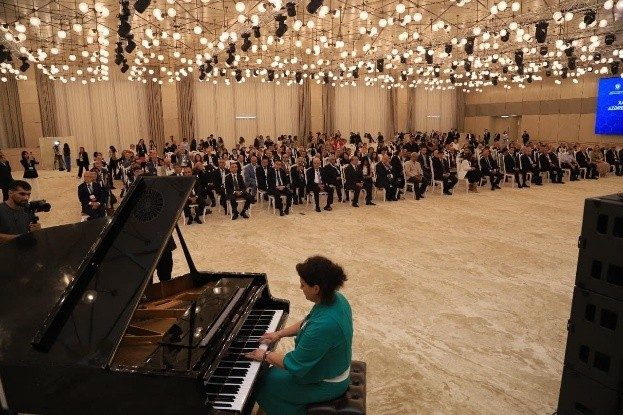

Every meeting, however heartwarming — long or brief — ends in farewell. Thanks be to the Creator! Perhaps parting is temporary; perhaps farewell itself may be postponed for a while. Our meeting turned out just that way.
We — participants of the first forum of scientists living abroad — gathered early in the morning to travel together to Karabakh. Our discussions in the hall of the hospitable Gulustan Palace concluded with a farewell banquet and concert.
Around the great round table we debated not only whether ancient or modern Azerbaijani cuisine was more delicious, but above all sought that simple human communion unconstrained by time or academic formality — the communion for which people on this earth sometimes need everything else.
When time passes and we remember those who have left us, we often regret that perhaps — God knows — we failed to offer them even one warm glance or one kind word that might have kept them with us a little longer.
Our farewell gathering was surely meant to weave that solidarity — to strengthen the unity of people whose fates, histories, native soil and love of the homeland are shared.
Musicians with national instruments — tar, kamancha, gaval and wind instruments — took their places on a low stage before those who had come to say goodbye. A beautiful woman sat before them: Revana Gurbanova, soloist of the Azerbaijan State Philharmonic and the International Mugham Centre. She was accompanied by her husband, the professional musician and leader of the "Buta" ensemble, Rovshan Gurbanov.
The performance opened with mugham. To my mind, mugham is a voice woven of golden threads from our people's past to the present — gathering in itself the grandeur and eternal harmony of the universe before human existence. A deep silence fell upon the hall where many different people had gathered. The khanende — as we call master mugham performers — Revana's voice, flowing like a mountain spring, filled every listener's heart with profound emotion.
Dance tunes and modern songs followed, yet the first feelings awakened by mugham did not leave the listeners throughout the night. Many forum participants delivered words of gratitude.
When it was clear the celebration would end in moments, Azerbaijani scientists from every corner of the earth rose in uplifted spirits, joined hands in a great circle and began to dance the ancient Azerbaijani Yalli dance. This dance is reflected in the rock drawings at Gobustan. Once the Twelfth Roman Legion wished to pass through those lands but could not; its soldiers mingled with the local people and settled there. Only the name of Ramana village on the Absheron preserves that historical memory — meaning "Roman." The bull's head on Baku's coat of arms is the emblem of the "Lightning" Twelfth Legion founded by Julius Caesar.
We would not let the musicians leave; they played until our dance was done. It was the eminent scholar Thor Heyerdahl — who travelled to Azerbaijan many times — who proved with scientific evidence that it is precisely this dance that is depicted in the Gobustan petroglyphs.
At last the participants looked at one another: on every face that light, that uplift of spirit, shone. Not I alone — everyone there saw it. I understand where that light came from. I think you do too.
FEELINGS FOR THE HOMELAND
FEELINGS FOR THE HOMELAND
Our road to Khankendi and Shusha passed through Barda and what was once the city of Aghdam — more precisely, through territories where Aghdam once stood and which those who cry "genocide!" at every opportunity later erased from the face of the earth. Yet not a scratch was found on their own homes: not a crack in window glass or wall.
The homes abandoned by residents who had fled still looked neat and untouched, though more than a year had passed.
My companion on the road was Akif Kadirovich Alaferdov. Joy sparkled in his eyes; a kind smile lit his face. He waved the flag in his hand to the rhythm of the song being sung on the bus. Despite the hours-long journey from the capital to Khankendi and to Shusha, the cultural capital of our homeland, the uplifted spirit of participants in the first forum of Azerbaijani scientists living abroad — held just two days earlier — was palpable.
A few warm words about Akif muallim. He is the son of an Azerbaijani family forcibly resettled by the Soviet authorities far from native Azerbaijan, to Kyrgyzstan, along with thousands of fellow countrymen. Yet our compatriots who became forced migrants did not give way to bitterness; they lived and created by honest labour, raising their children in respect for elders, deep reverence for their people and for those who extended a hand to them in a new land.
Years passed. Today Akif Kadirovich Alaferdov is a traumatologist who has crossed his country's borders and healed thousands of patients; he has trained many highly qualified specialists. Honoured Physician of the Kyrgyz Republic, candidate of medical sciences, author of monographs, methodological guidelines and scientific articles — Akif muallim is also distinguished by wide public activity: he is president of the Kyrgyzstan–Azerbaijan Friendship and Cooperation Society and honorary president of the "Azəri" Public Union.
At moments on the journey it seemed to me that Akif muallim's open, radiant smile, despite his venerable age, cast light upon the roads of free Karabakh. As if he were not a man entering the eighth decade of his life — his laughter was childlike, pure, unspoiled.
Girls dancing in the bus aisle, a song sung by Professor Mesud Afandiyev who had come from the heart of Europe to Baku, the flags in our companions' hands — all of this together created throughout the journey an atmosphere of unrepeatable joy and spiritual uplift. Akif muallim and I joined everyone in singing the songs of our youth.
Our hearts beat for Khankendi and Shusha. Yes, we live, create and work in different corners of the world — yet we remain together. We love our homeland not only yesterday or today but always. It is that love that unites us.
JIDIR PLAIN
JIDIR PLAIN
This is Jidir Plain. Dear, native Jidir for each of us. One cannot imagine Shusha without Jidir; one cannot imagine Azerbaijan without Shusha. We have returned to Shusha, we have returned to Jidir Plain, and henceforth history will be made here — the voice of mugham will be heard, Azerbaijani songs will be performed, grand events will be held, weddings and celebrations will take place...
From Khankendi a winding road threaded through rocks covered with dense thickets, lifting our buses ever higher toward the mountain summit. Each turn brought us one step closer to meeting Shusha. The rooftops of Khankendi already lay far below, while our buses moved slowly onward without stopping.
Some participants of the forum of Azerbaijani scientists living abroad watched the road from the window with impatience, others with open excitement, still others with curiosity. Yet for many of us Shusha appeared suddenly. The buses slowed; we all stepped down from the cars beside the guesthouse where lunch had been prepared.
Here we were welcomed not only with lunch but with a meeting with Shahin Bayramov, rector of Karabakh University, and the staff of the institution he leads. The rector spoke with confidence and optimism about the university's prospects, about Karabakh youth striving eagerly toward the future — their hopes, projects and faith. Without doubt, the support of Azerbaijani scientists living abroad will contribute its share to deepening the knowledge and skills of Karabakh University's students.
Thanking the rector for the engaging conversation, we at last turned toward the city.
"Musicians and poets are closest to God," — the great Siberian writer Viktor Petrovich Astafyev, who knew the front, used to say. I had known him for many years; we had met often. He is author not only of "The Tsar Fish" and "Vasyutkino Lake" but also of the novel "Damned and Killed," reflecting the horrors of war.
I stood beside three restored rarities: the monuments to composer Uzeyir Hajibeyli, poet Natavan and singer Bulbul. These great figures were born and grew up on native soil, in their native city. Yet these restored monuments had once been savagely shot at, destroyed, sent for scrap metal. Why? I do not know. But one thing I know for certain: those who demolished the elevated monuments of artists and poets cannot be called human.
I also saw the ruins of Natavan's and Hajibeyli's houses. Shells had not struck those homes — looters had destroyed them. They cannot be called a nation. Those who shot at the monuments of poets and musicians, who stole door and window frames, dishes, even toilet bowls, have no nationality — and cannot have one.
I washed my face at the spring and walked toward Shusha's fortress gate. Most of my colleagues had already passed through and were joyfully having photographs taken in the open air beyond the ancient walls. I, with legs afflicted by diabetes, lagged far behind. Moreover, the ground before the gate was so uneven and stony that my steps had all but ceased. It was very hard both to move and to keep balance on the sloping, rocky surface.
Suddenly a gentle, steady hand held me by the elbow and saved me from an unexpected stumble — from falling onto smooth stones trodden by millions over centuries. I did not yet know who this young woman was or what she wanted; her help sprang from pure mercy. We spoke in our native Azerbaijani. She introduced herself as Gulxanim. I explained to her what this journey meant for me — that it was not a simple stroll but carried vital meaning.
In November 2020, when our army advanced on Shusha, I was detained by police in Siberia. I had a pension certificate with my photograph, name, surname and date of birth, but no passport with me. A sergeant seized me and dragged me to the police station — I learned later from the protocol that his surname was Chonyan. I was forbidden to stand for long periods; nevertheless, Chonyan and his colleagues kept me under examination for several hours on the pretext of "checking identity in the database."
They gestured that I should pass myself off as Russian — then they would release me, they promised. I refused stubbornly and repeated:
I am Azerbaijani. I am Turk. I will remain Turk even if they break me!
Do you understand — on whose account should I deny my parents?!
A year earlier I had written the narrative poem Khari Bulbul about our homeland's history; now, for the first time in my life, I was in Shusha — in the native land of the Khari Bulbul!
Jidir Plain in the south of Shusha has been a sacred place since the Karabakh khanate. Here, twice a year, the ancient race of Karabakh horses has been held; the people have celebrated Novruz and other festivities on this plain. Here too the mounted sport of chovgan — considered the ancestor of modern polo — has been the ornament of the season.
The wide mountain meadow became a favourite open-air studio for painters in the nineteenth and twentieth centuries. The mountain views seen from here are truly unrepeatable. Music festivals, literary fairs, holidays and Novruz celebrations have come alive on this plain. The Khari Bulbul festival held between 1989 and 1991 has, since Shusha's liberation — from 2021 onward — begun each year to reclaim its place on this meadow.
To dear Gulxanim, who led me by the arm to the bus, I confessed a secret wish I had told no one: to climb to Jidir Plain and walk barefoot on the green grass there. Perhaps afterward my legs would no longer ache as they had for four years. Of course this is a naive thought — but where have you seen a poet who does not believe in miracle?
Gulxanim escorted me to the bus and wished my dream fulfilled. Soon the bus moved on — but my difficulties were not over: before reaching Jidir Plain the driver announced that the road was too steep for vehicles; from here we must walk.
Go or stay? If the talk was of a dream coming true, what does not going mean?! I went.
The slope was steep indeed. Again I walked behind everyone. I had to stop every few steps to breathe, leaning against the low walls of the narrow path. I did not watch the others — only my feet. Sweat ran into my eyes; my chest could not find air.
Suddenly I noticed a small flat on the left of the endless incline. I turned there. In the distance rose an architectural monument bearing the inscription "Vagif" — the avenue of the recently restored mausoleum of Molla Panah Vagif. Molla Panah Vagif was the first vizier of the Karabakh khanate, a renowned political figure of the eighteenth century and, above all, a great poet who won the people's deep love. The avenue let me catch my breath.
Yet I had to climb to Jidir — if I stopped, my friends would return to the buses. That thought drove me on. This was the longest distance I had covered in recent years. Once I had climbed rocks and passed easily through the Taiga forests and the bogs of the Tundra. The stroke I suffered and the three stents placed in my heart, alas, no longer permitted those "expedition heroics."
At last effort was rewarded. As Jidir Plain opened, I saw Gulxanim again — my rescuer from before. We linked arms as before. It turned out she had come here in a Land Rover driven by an unknown man, whom she had asked to help me. Moving at tortoise pace, they had reached this place long before me.
We stepped onto the green. I removed my shoes and socks and began to walk Jidir Plain barefoot. The third toe on one foot had been amputated as recently as 2020. For the first time in my life I was setting foot on soil I had never seen yet for whose freedom — however little — my own blood had been shed.
Now I walked Jidir smiling. I count myself happy; I regret nothing. I remember the words that spread across the world: "Dear Shusha, you are free!" Those words still resound in my heart.
Gulxanim stepped back to sketch the slopes and the beauty of Jidir. We may not meet again — but from now on Shusha will always remind me of her. Azerbaijan will remind me of my scholar brothers Mesud Afandiyev, Bakhtiyar bey, Emil muallim, Akif muallim and countless beautiful representatives of our people. This is my native, kind, building, creative people who know how to love and forgive!
KHADIJA

KHADIJA
In the great hall — like a nervous system where separate sounds and words easily merge into echo — she stood offstage beside the piano, wings spread as if in a smile, modest yet noble.
One session of the world forum of Azerbaijanis living abroad had just ended; the next had not begun. From the crowd of conversing participants emerged a woman in chrysoprase green, dark-haired, graceful and poised. She sat confidently before the piano, her fingers gliding over the keys as if kissing them — and music was born.
The melody Ay Lachin conquered hearts in the hall — familiar from childhood, stirring deep feeling. Lachin — looted and burned in 1992, liberated later, and since 2022 rising again after thirty years.
Photographers and camera crews soon surrounded the woman behind the piano; she continued as if alone — only she and the instrument.
Her name is Khadija, her surname Zeynalova. A composer known worldwide; she lives and creates in Germany. At the forum she took part by special invitation as a source of our national pride and spiritual wealth.